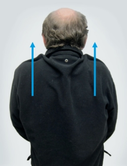

Es ist nicht so leicht, bei den üblichen Bauarbeitszeiten regelmäßig Sport zu treiben. Die Arbeit macht müde und die Arbeits- und Wegezeiten passen oft nicht zum Sportangebot am Wohnort. Aber Ihre Fitness bleibt Ihnen nur erhalten, wenn Sie etwas für sich tun! Nutzen Sie kurze Pausen zu Dehnungs- und Entlastungsübungen.
Lockerung der Schulter- und Nackenmuskulatur
Ausgangsposition:
im Sitzen → Oberkörper aufrecht
oder
im Stehen → Füße parallel, Knie leicht gebeugt
Ausführung:
Anmerkung:
rückwärts kreisen ist besser als vorwärts kreisen

Wiederholung: 3 bis 5 x